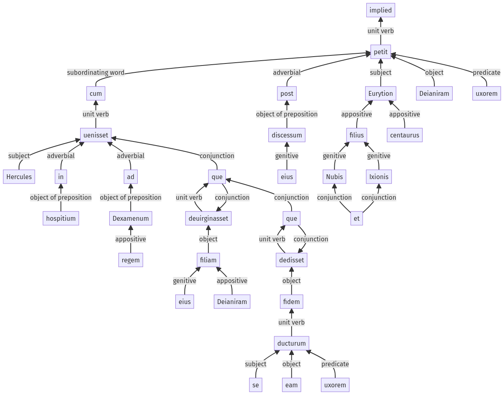

Hyginus, Fabulae, 33pr.1.1-33pr.1.30a
30pr.13.1-30pr.13.10a | 33pr.1.31-33pr.1.38a
Sentence 458
33pr.1.1-33pr.1.30a
Hercules cum in hospitium ad Dexamenum regem uenisset, eius que filiam Deianiram deuirginasset, fidem que dedisset se eam uxorem ducturum, post discessum eius Eurytion Ixionis et Nubis filius centaurus petit Deianiram uxorem.
2 Hercules cum in hospitium ad Dexamenum regem uenisset
2 eius que filiam Deianiram deuirginasset
2 fidem que dedisset
2 se eam uxorem ducturum
1 post discessum eius Eurytion Ixionis et Nubis filius centaurus petit Deianiram uxorem
Hercules cum in hospitium ad Dexamenum regem uenisset, eius que filiam Deianiram deuirginasset, fidem que dedisset se eam uxorem ducturum, post discessum eius Eurytion Ixionis et Nubis filius centaurus petit Deianiram uxorem.
Highlighting:
- connecting words
- unit verb
- subject
- object
Color code:
- independent clause (level 1, transitive verb)
- subordinate clause (level 2, intransitive verb)
- subordinate clause (level 2, transitive verb)
- subordinate clause (level 2, transitive verb)
- indirect statement (level 3, transitive verb)
